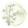
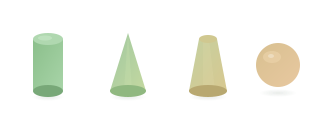

青竹
数苑
MathSeek
全部
几何
函数
概率
祝婳婳、柳栋和娃娃们健康快乐
通过可视化与交互操作，让抽象的数学概念变得直观可感。拖动、旋转、观察，在探索中理解。
全部工具
立体几何
函数图像
概率统计

柱 · 锥 · 台 · 球
交互式探索四种基本空间几何体，通过拖动参数滑条观察形状变化，理解底面半径、高与形状的关系。
立体几何
GeoGebra
🔄
三角函数 · 单位圆
拖动角度滑块，观察单位圆上的点如何生成正弦和余弦曲线。直观理解三角函数的几何意义与周期性。
函数图像
三角函数
📈
二次函数 · 抛物线探索
通过调节 a、b、c 和顶点参数 h、k，实时观察抛物线变化。同步显示一般式与顶点式，理解配方的几何意义。
函数图像
二次函数